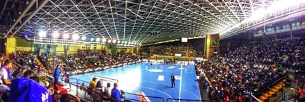

2000/01
LEÓN · DESDE 1956
UNA CIUDAD,
UN EQUIPO
NACIDO EN SAN JOSÉ
El Club Deportivo Ademar León nació en 1956 por iniciativa de antiguos alumnos del Colegio Marista San José que querían seguir jugando al balonmano al terminar sus estudios.
De aquel grupo de jugadores creció un club que convirtió el balonmano en parte de la vida deportiva de León. El equipo ascendió a Primera Nacional en 1975/76, a División de Honor en 1981/82 y 1984/85, y alcanzó la Liga ASOBAL en 1993/94.
La temporada 2026/27 celebra siete décadas de historia: cantera, competición europea y noches de Palacio, siempre con León detrás.

PALMARÉS OFICIAL
TÍTULOS QUE NOS TRAJERON HASTA AQUÍ
2001/02
1998/99 · 2008/09
1998/99 · 2004/05
Títulos de campeón recogidos en la historia oficial del club. No se cuentan como títulos las finales disputadas.

NUESTRA CASA
EL PALACIO
Palacio Municipal de los Deportes Urbano González Escapa.
En la avenida del Ingeniero Sáenz de Miera, es el pabellón donde el ABANCA Ademar entrena y disputa sus partidos de Liga y competición europea.
- Aforo
- 6.000 espectadores
- Dirección
- Av. del Ingeniero Sáenz de Miera, s/n · León
- En casa
- Balonmano, entrenamientos y partidos del primer equipo
Fuentes: historia oficial del club · ficha ASOBAL del equipo y pabellón.